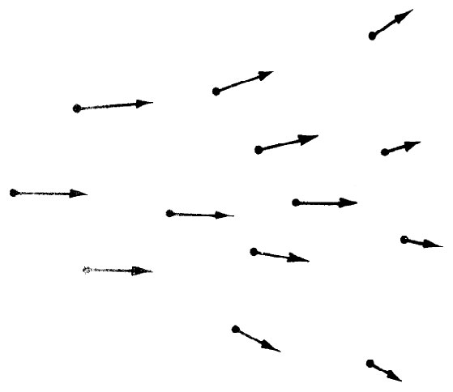
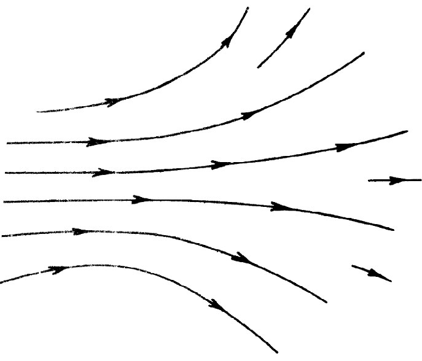

首先，我们必须对电和磁矢量即E和B的概念稍做推广。依据一个电荷所感受到的力，我们已对E和B下了定义。现在我们想要谈谈即使没有电荷存在的某一点 的电场和磁场。实际上，既然有力“作用在”电荷上，则当电荷移去时，那里仍存在“某种东西”。如果位于点（x，y，z）上的电荷、在时刻t感受到由式（1.1）所给出的力F，则我们便可以把矢量E和B与空间中该点 （x，y，z）联系起来。可以认为E（x，y，z，t）和B（x，y，z，t）给出了力，即可被位于（x，y，z）点的电荷、在时刻t体验到那个力，同时满足这样一个条件 ：在那里放置该电荷，并不扰动 产生这场的所有其他电荷的位置或运动。
根据这一概念，我们把空间中每一点 （x，y，z）与两个矢量E和B相联系，它们也可能会随时间而改变，于是，电场和磁场就可视作x，y，z和t的矢量函数 。既然一个矢量由其各分量所确定，所以场E和B就代表了x，y，z和t的三个数学函数。
正因为E（或B）可以在空间每一点被规定下来，所以它才被称为“场”。所谓“场”，就是在空间不同点上会取不同值的一种物理量。例如，温度就是一种场——在这一情况下是一标量场，我们把它写成T（x，y，z）。温度也可能随时间变化，那么我们应称温度场与时间有关，从而把它写成T（x，y，z，t）。另一例为流动液体的“速度场”，我们把时刻t空间每一点的液体速度写成v（x，y，z，t），它是一个矢量场。
回到电磁场方面来，虽然它们是按复杂公式由电荷所产生的，但却具有如下重要特性：在空间一点 的场值与一邻近点 的场值之间存在十分简单的关系。仅凭几个以微分方程表达的这种关系，我们就能把场完整地描述出来。正是依靠这样的方程式，电动力学规律才得以被最简洁地写出。
曾有过种种发明，试图帮助人们把场的行为形象化。其中最正确也最抽象的一种是：仅认为场是位置与时间的数学函数。我们可以尝试通过在空间的许多点各画出一些矢量来获得一个关于场的思维图像，其中每一矢量给出该点场的强度和方向。这一表达方式如图1-1所示。另外，我们还可以进一步画出处处都与那些矢量相切的一些线，比如，这些线沿着那些箭头并跟踪着场的方向。当我们这样做时，就已丧失了矢量长度 的痕迹，但可通过如下办法来记录场的强度即对于弱场把场线画得较疏，而对于强场则把场线画得较密。我们按惯例使通过垂直于线的每单位面积的线数 与场强 成正比。当然，这只是一种近似，一般说来，有时还需要在某处画一些新线以保持线数与场强相配。这样，图1-1所示的场就可由图1-2所示的场线来表示。
|  |  |
| 图1-1 矢量场可用一组箭头来表示。每支箭头的大小和方向为所画箭头的那一点的矢量场之值 | 图1-2 矢量场可用一些线来表示，这些线在每一点与场矢量的方向相切，而线的密度则与场矢量的大小成正比 |